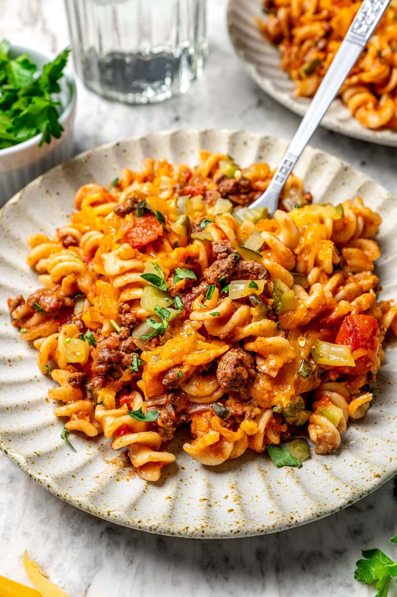
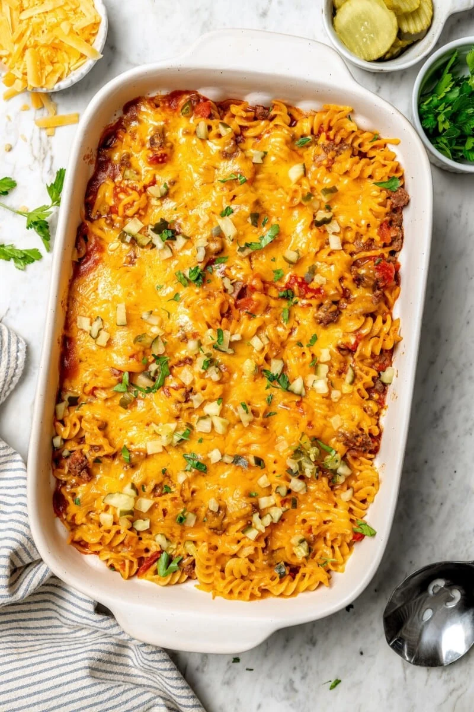
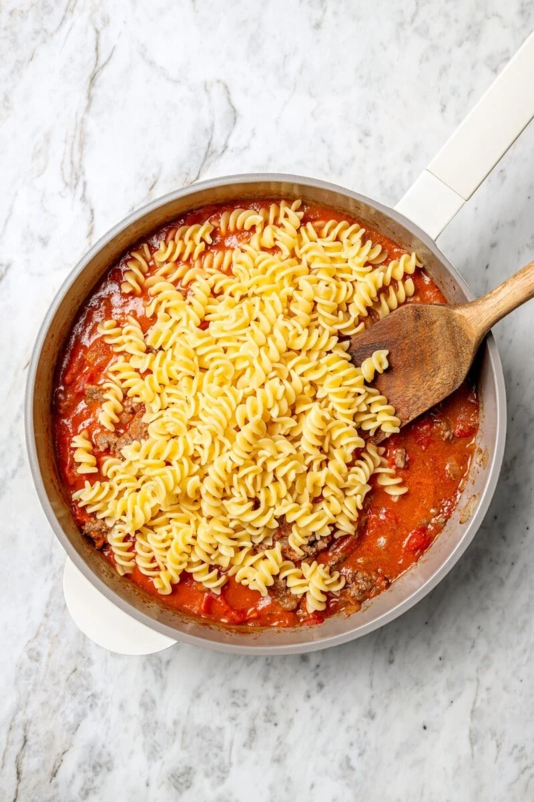

Cheeseburger Casserole
Looking for a fast, family-friendly meal that tastes like your favorite burger but is even easier to make? This Cheeseburger Casserole is the perfect solution for busy nights. It has all the flavors you love—savory beef, tangy mustard, melty cheese, and even pickles—packed into one warm, comforting dish. And the best part? It comes together quickly with simple ingredients and just a few easy steps.
Here's what you'll need:
- 2 cups (6 oz) uncooked rotini pasta (use brown rice pasta for gluten-free)
- 2 tsp olive oil
- 1 1/2 cups finely chopped onions
- 1 garlic clove, finely chopped
- 1 lb lean ground beef (95% lean)
- 3/4 tsp salt
- 1/2 tsp black pepper
- 2 tbsp tomato paste
- 28 oz diced tomatoes
- 2 tbsp Dijon mustard
- 2 cups reduced-fat grated cheddar cheese
- 1/4 cup chopped dill pickles
Instructions:
- Preheat your oven to 350°F and spray a 9x13 inch baking dish with cooking spray.
- Boil pasta in salted water until al dente, then drain.
- In a large skillet, heat olive oil over medium-low. Add onions and cook until soft, about 5 minutes. Stir in garlic and cook for 30 seconds.
- Add ground beef and cook until browned. Season with salt and pepper.
- Stir in tomato paste, then add diced tomatoes and mustard. Let it simmer for 2 minutes. 
- Mix meat sauce with pasta, then spread in the baking dish. Top with cheese.
- Bake for 15 minutes or until the cheese melts. Sprinkle chopped pickles on top and serve!
It's a quick, tasty dinner that feels like comfort food and only takes about 30 minutes to make from start to finish.